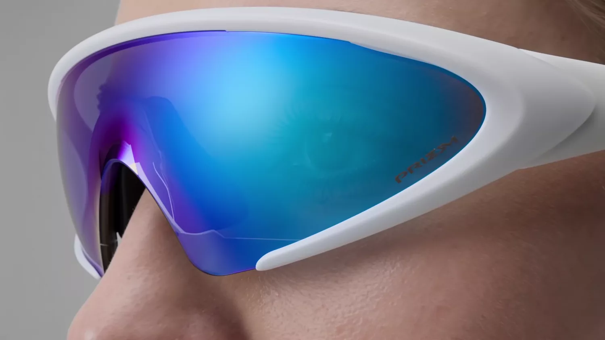
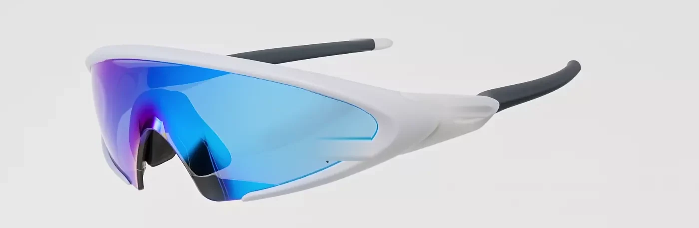
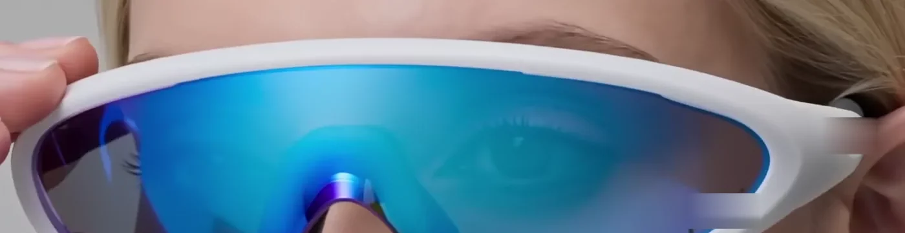
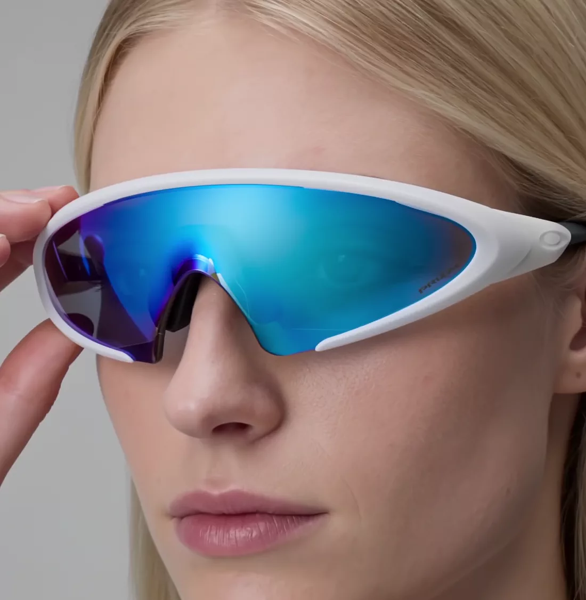
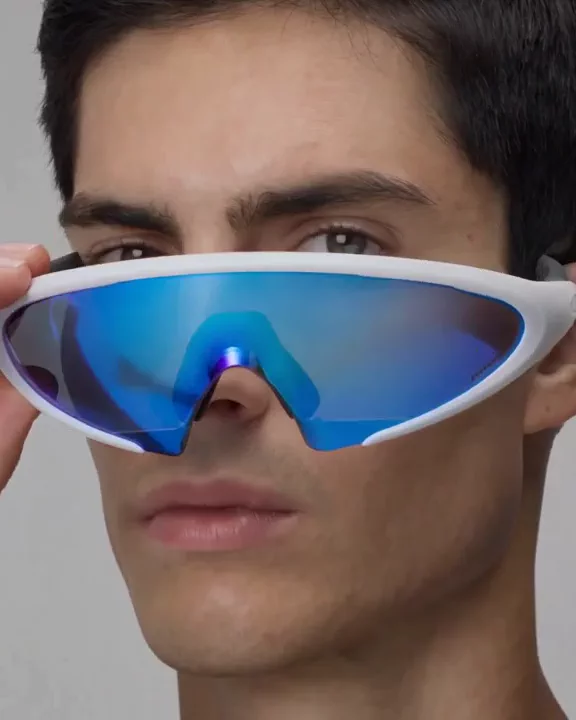
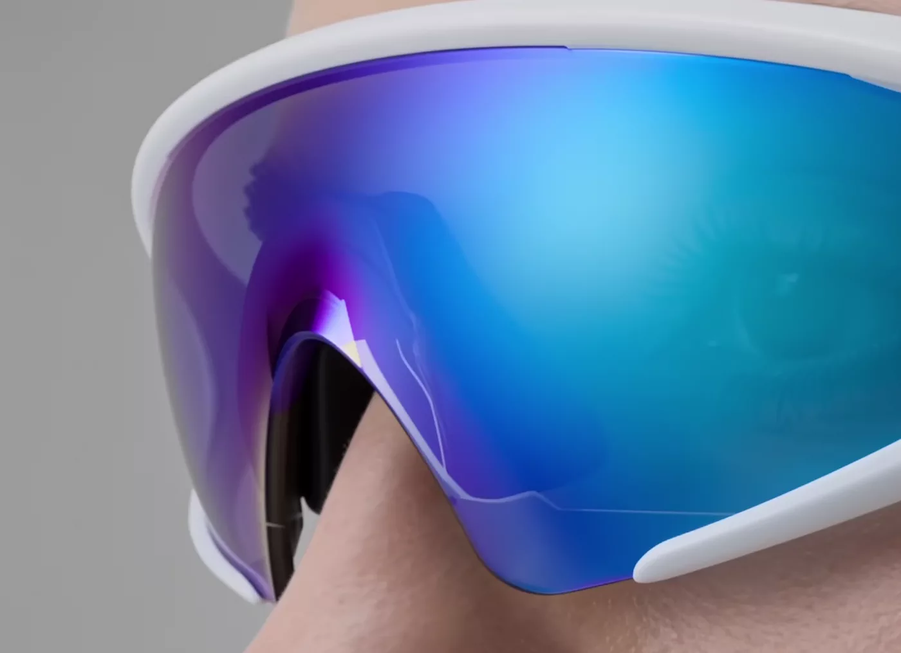
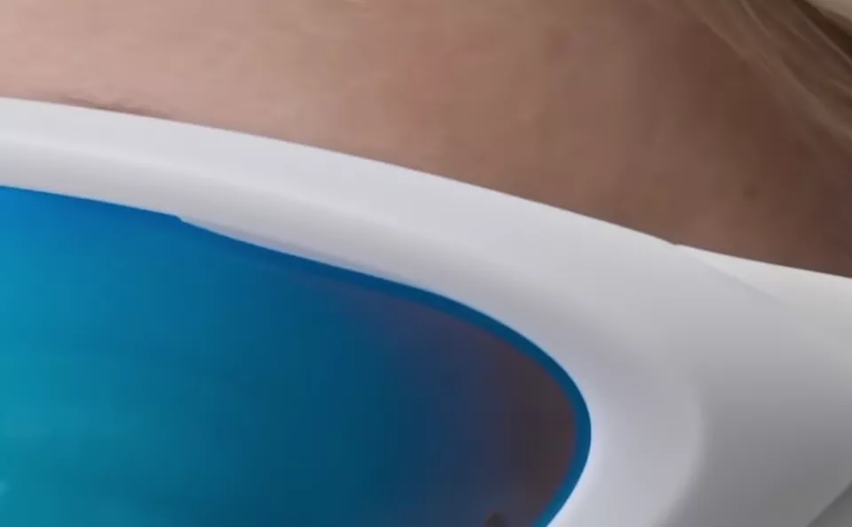
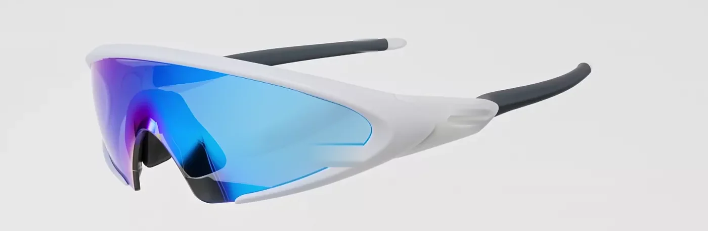

Orley
Continuum — shield optic
Nothing crosses your view
Mirror out.
Clear in.
Continuum
Meridian Blue · base 8 · 22 g
Light
What it
takes out
A lens is a subtraction. This one stops everything below 400 nanometres outright, damps the blue that scatters into haze, and leaves the long wavelengths — the ones you judge distance and edges with — largely alone.
Transmission across the visible spectrum. Nothing passes below 400 nanometres. Transmission stays under 8 percent through the violet and blue, dips again at 585 nanometres, and rises to about 21 percent in the deep red.
Wavelength — Transmits — Reflects —
Drag across the spectrum, or use the arrow keys
12%
Visible light transmission. Category 3 — full sun, and legal to drive in daylight.
400 nm
Everything shorter is stopped outright: UVA, UVB and UVC, at every angle the shield covers.
24
Layers in the mirror. The blue you see is interference between them, not pigment — it is the light being sent back.
Form
One lens,
edge to edge
The shield is a single sheet, curved to base 8 and cut to the orbit. Nothing bridges the middle but four millimetres of nose, and no rim crosses your sight line — which is the entire reason it looks like this.

Worn

Worn, it disappears
22 g · three-point contact

Three points,
no clamp
The bridge and two temple tips carry all 22 grams between them. Four millimetres of bridge adjustment covers a narrow face and a wide one. Nothing pinches at the hinge, and there is no pressure band after four hours.

Materials

The mirror
Violet at a glancing angle, cyan straight on. Interference shifts with the angle you hold it at, which is how you can tell a coating from a tint.

The brow
The lens seats into a channel rather than a rim, so the frame never breaks the surface. The line you see is the seat, not an edge of glass.

The frame
Injected nylon, matte white through the full section. A scratch takes the finish off and shows the same colour underneath.
Specification
| Model | Continuum |
|---|---|
| Colourway | Matte White / Meridian Blue |
| Lens | Polycarbonate, single piece, base 8 |
| Coating | 24-layer dielectric mirror, hydrophobic outer |
| Transmission | 12% · Category 3 |
| Ultraviolet | 100% stopped below 400 nm |
| Frame | Injected nylon, co-moulded temple tips |
| Mass | 22 g |
| Fit | Standard to wide · 4 mm adjustable bridge |
| In the box | Microfibre case, leash, spare bridge |
Reserve
£340
First run of 500. Ships from the Meridian workshop in March.